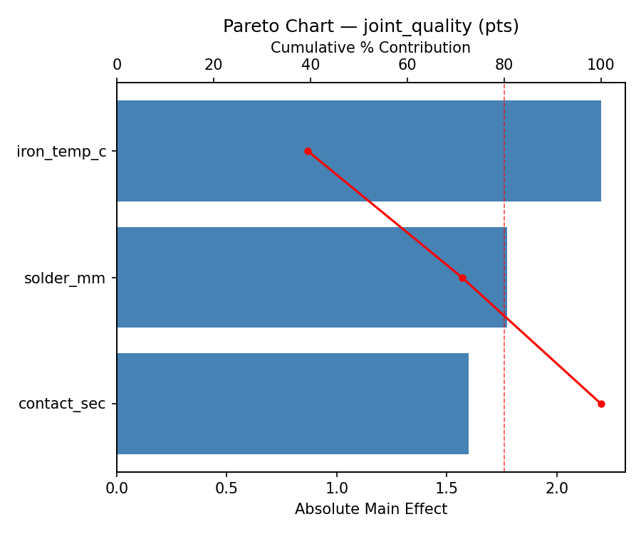
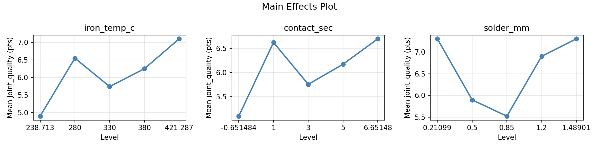
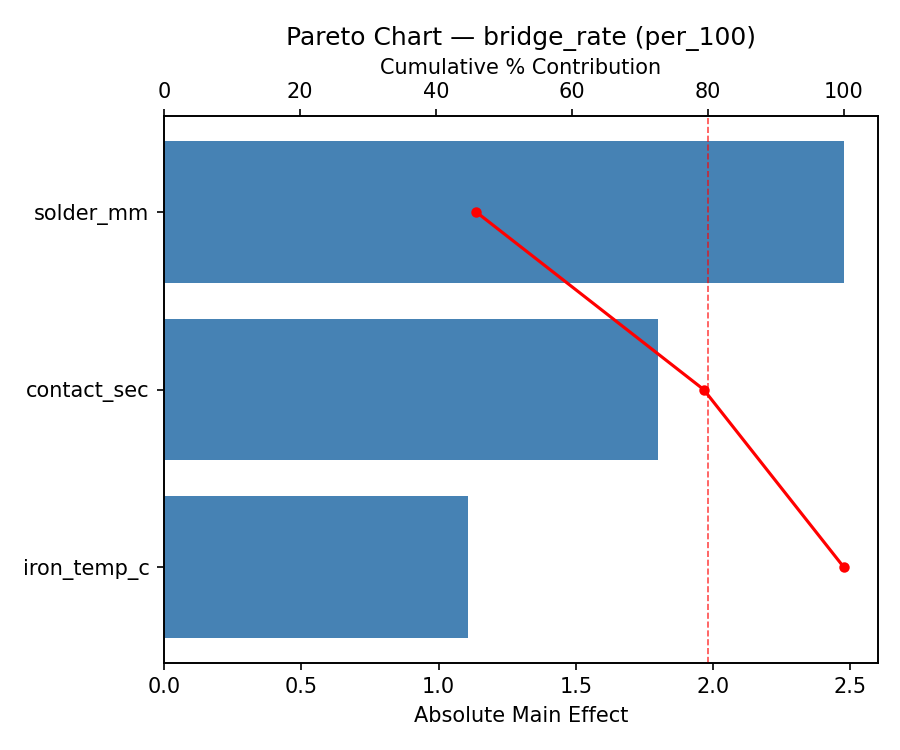
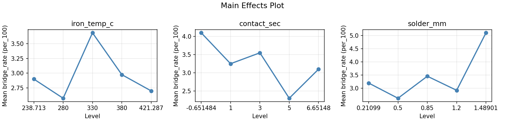
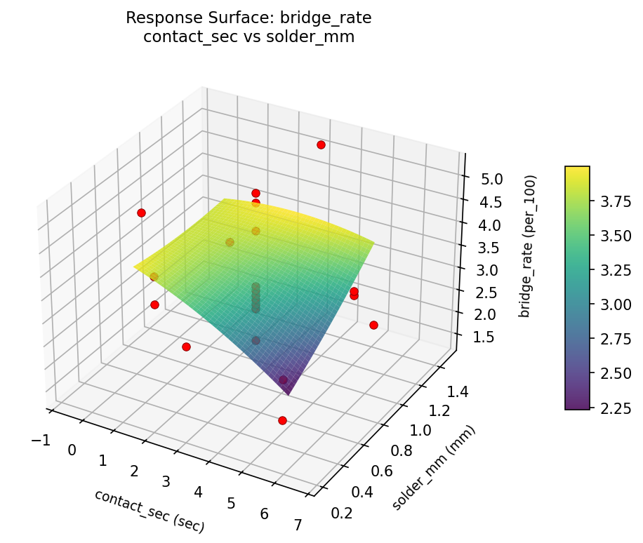
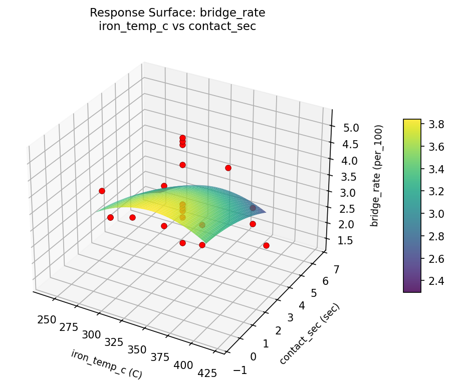
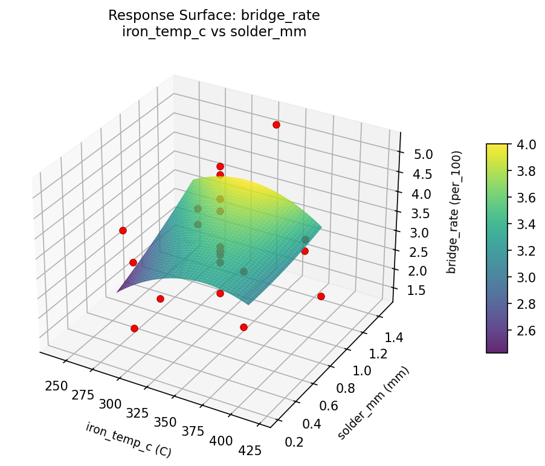
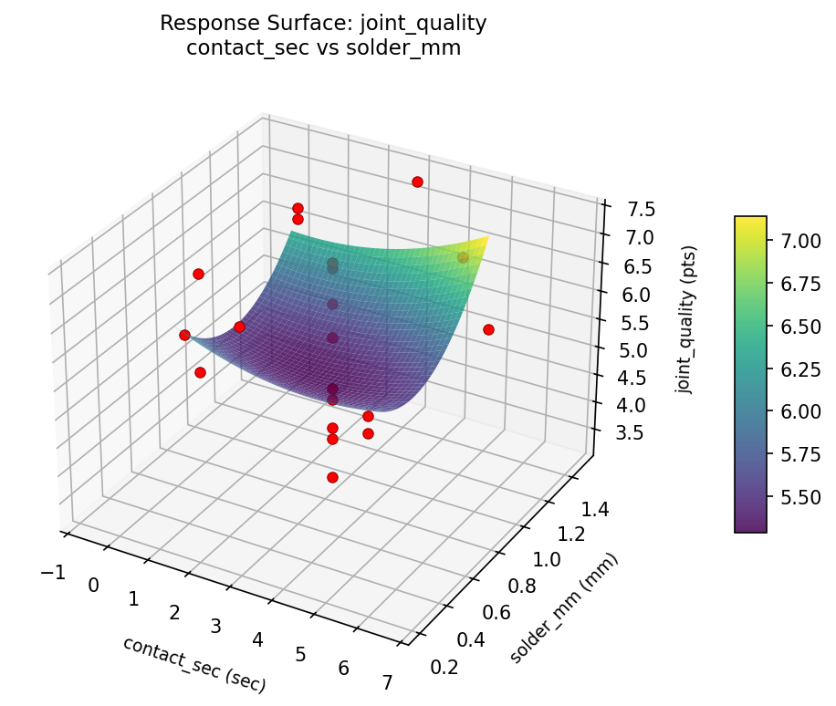
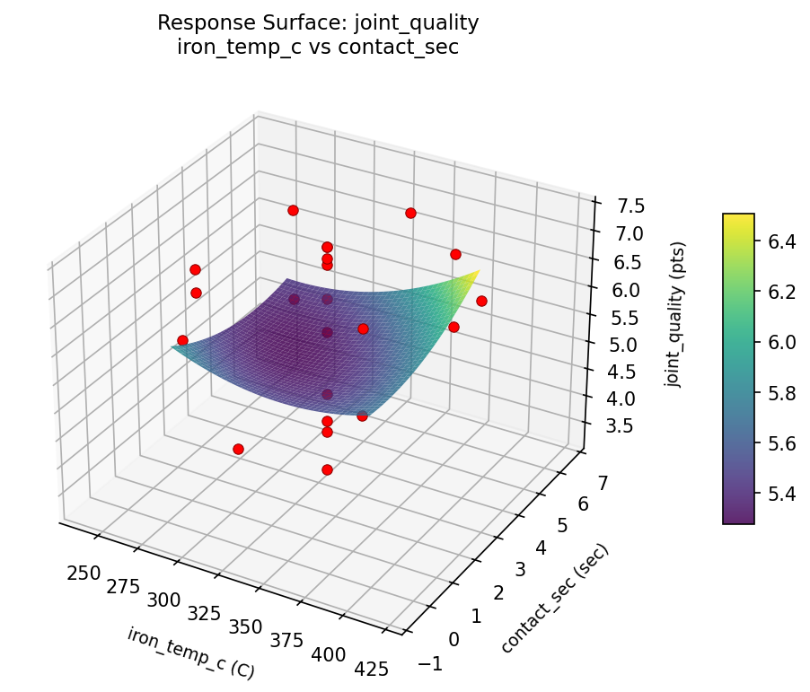
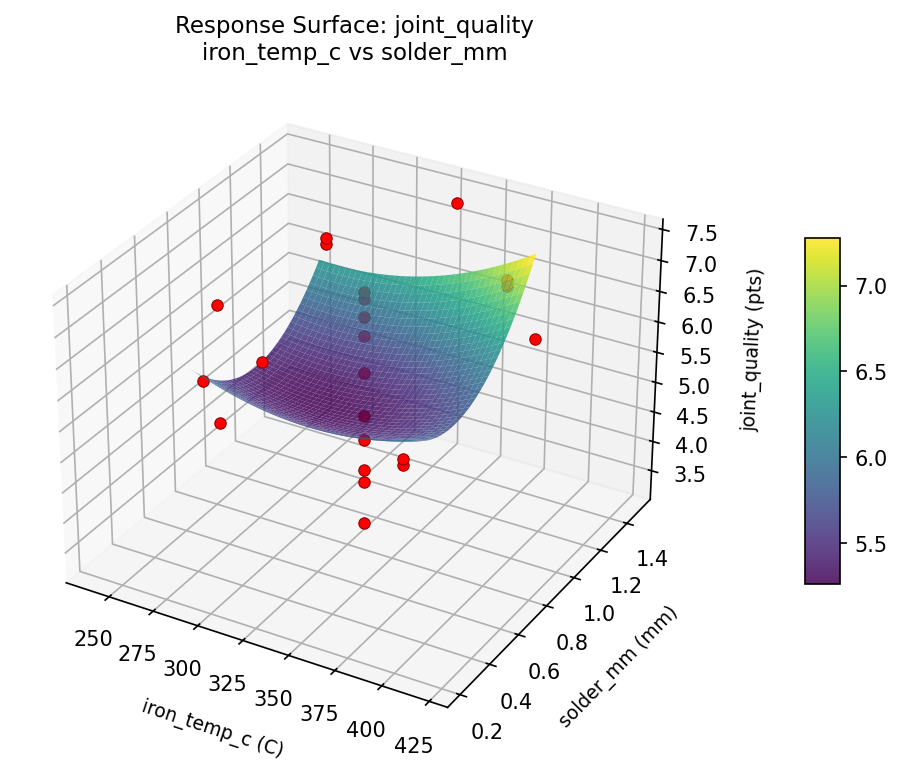

Summary
This experiment investigates pcb soldering parameters. Central composite design to maximize joint quality and minimize bridging by tuning iron temperature, contact time, and solder wire diameter.
The design varies 3 factors: iron temp c (C), ranging from 280 to 380, contact sec (sec), ranging from 1 to 5, and solder mm (mm), ranging from 0.5 to 1.2. The goal is to optimize 2 responses: joint quality (pts) (maximize) and bridge rate (per_100) (minimize). Fixed conditions held constant across all runs include flux = rosin, tip = chisel_2mm.
A Central Composite Design (CCD) was selected to fit a full quadratic response surface model, including curvature and interaction effects. With 3 factors this produces 22 runs including center points and axial (star) points that extend beyond the factorial range.
Quadratic response surface models were fitted to capture potential curvature and factor interactions. The RSM contour plots below visualize how pairs of factors jointly affect each response.
Key Findings
For joint quality, the most influential factors were iron temp c (39.5%), solder mm (31.8%), contact sec (28.7%). The best observed value was 7.3 (at iron temp c = 330, contact sec = 3, solder mm = 0.85).
For bridge rate, the most influential factors were solder mm (46.0%), contact sec (33.4%), iron temp c (20.6%). The best observed value was 1.4 (at iron temp c = 330, contact sec = 3, solder mm = 1.48901).
Recommended Next Steps
- Run confirmation experiments at the predicted optimal settings to validate the model.
- Consider whether any fixed factors should be varied in a future study.
Experimental Setup
Factors
| Factor | Low | High | Unit |
|---|
iron_temp_c | 280 | 380 | C |
contact_sec | 1 | 5 | sec |
solder_mm | 0.5 | 1.2 | mm |
Fixed: flux = rosin, tip = chisel_2mm
Responses
| Response | Direction | Unit |
|---|
joint_quality | ↑ maximize | pts |
bridge_rate | ↓ minimize | per_100 |
Configuration
{
"metadata": {
"name": "PCB Soldering Parameters",
"description": "Central composite design to maximize joint quality and minimize bridging by tuning iron temperature, contact time, and solder wire diameter"
},
"factors": [
{
"name": "iron_temp_c",
"levels": [
"280",
"380"
],
"type": "continuous",
"unit": "C"
},
{
"name": "contact_sec",
"levels": [
"1",
"5"
],
"type": "continuous",
"unit": "sec"
},
{
"name": "solder_mm",
"levels": [
"0.5",
"1.2"
],
"type": "continuous",
"unit": "mm"
}
],
"fixed_factors": {
"flux": "rosin",
"tip": "chisel_2mm"
},
"responses": [
{
"name": "joint_quality",
"optimize": "maximize",
"unit": "pts"
},
{
"name": "bridge_rate",
"optimize": "minimize",
"unit": "per_100"
}
],
"settings": {
"operation": "central_composite",
"test_script": "use_cases/272_pcb_soldering/sim.sh"
}
}
Experimental Matrix
The Central Composite Design produces 22 runs. Each row is one experiment with specific factor settings.
| Run | iron_temp_c | contact_sec | solder_mm |
|---|
| 1 | 330 | 3 | 0.85 |
| 2 | 380 | 1 | 1.2 |
| 3 | 280 | 5 | 0.5 |
| 4 | 330 | 6.65148 | 0.85 |
| 5 | 330 | 3 | 0.85 |
| 6 | 238.713 | 3 | 0.85 |
| 7 | 330 | 3 | 0.21099 |
| 8 | 330 | 3 | 0.85 |
| 9 | 380 | 5 | 0.5 |
| 10 | 421.287 | 3 | 0.85 |
| 11 | 330 | 3 | 0.85 |
| 12 | 330 | -0.651484 | 0.85 |
| 13 | 330 | 3 | 0.85 |
| 14 | 280 | 1 | 1.2 |
| 15 | 330 | 3 | 0.85 |
| 16 | 380 | 1 | 0.5 |
| 17 | 330 | 3 | 1.48901 |
| 18 | 380 | 5 | 1.2 |
| 19 | 330 | 3 | 0.85 |
| 20 | 280 | 1 | 0.5 |
| 21 | 280 | 5 | 1.2 |
| 22 | 330 | 3 | 0.85 |
Step-by-Step Workflow
1
Preview the design
$ python doe.py info --config use_cases/272_pcb_soldering/config.json
2
Generate the runner script
$ python doe.py generate --config use_cases/272_pcb_soldering/config.json \
--output use_cases/272_pcb_soldering/results/run.sh --seed 42
3
Execute the experiments
$ bash use_cases/272_pcb_soldering/results/run.sh
4
Analyze results
$ python doe.py analyze --config use_cases/272_pcb_soldering/config.json
5
Get optimization recommendations
$ python doe.py optimize --config use_cases/272_pcb_soldering/config.json
6
Generate the HTML report
$ python doe.py report --config use_cases/272_pcb_soldering/config.json \
--output use_cases/272_pcb_soldering/results/report.html
Features Exercised
| Feature | Value |
|---|
| Design type | central_composite |
| Factor types | continuous (all 3) |
| Arg style | double-dash |
| Responses | 2 (joint_quality ↑, bridge_rate ↓) |
| Total runs | 22 |
Analysis Results
Generated from actual experiment runs using the DOE Helper Tool.
Response: joint_quality
Top factors: iron_temp_c (39.5%), solder_mm (31.8%), contact_sec (28.7%).
Pareto Chart

Main Effects Plot

Response: bridge_rate
Top factors: solder_mm (46.0%), contact_sec (33.4%), iron_temp_c (20.6%).
Pareto Chart

Main Effects Plot

Response Surface Plots
3D surfaces fitted with quadratic RSM. Red dots are observed data points.
bridge rate contact sec vs solder mm

bridge rate iron temp c vs contact sec

bridge rate iron temp c vs solder mm

joint quality contact sec vs solder mm

joint quality iron temp c vs contact sec

joint quality iron temp c vs solder mm

Full Analysis Output
RSM surface: rsm_joint_quality_iron_temp_c_vs_contact_sec.png
RSM surface: rsm_joint_quality_iron_temp_c_vs_solder_mm.png
RSM surface: rsm_joint_quality_contact_sec_vs_solder_mm.png
RSM surface: rsm_bridge_rate_iron_temp_c_vs_contact_sec.png
RSM surface: rsm_bridge_rate_iron_temp_c_vs_solder_mm.png
RSM surface: rsm_bridge_rate_contact_sec_vs_solder_mm.png
=== Main Effects: joint_quality ===
Factor Effect Std Error % Contribution
--------------------------------------------------------------
iron_temp_c 2.2000 0.2604 39.5%
solder_mm 1.7750 0.2604 31.8%
contact_sec 1.6000 0.2604 28.7%
=== Summary Statistics: joint_quality ===
iron_temp_c:
Level N Mean Std Min Max
------------------------------------------------------------
238.713 1 4.9000 0.0000 4.9000 4.9000
280 4 6.5500 0.8505 5.3000 7.2000
330 12 5.7417 1.4305 3.3000 7.3000
380 4 6.2500 0.8103 5.5000 7.0000
421.287 1 7.1000 0.0000 7.1000 7.1000
contact_sec:
Level N Mean Std Min Max
------------------------------------------------------------
-0.651484 1 5.1000 0.0000 5.1000 5.1000
1 4 6.6250 0.7676 5.5000 7.2000
3 12 5.7583 1.4687 3.3000 7.3000
5 4 6.1750 0.8461 5.3000 6.9000
6.65148 1 6.7000 0.0000 6.7000 6.7000
solder_mm:
Level N Mean Std Min Max
------------------------------------------------------------
0.21099 1 7.3000 0.0000 7.3000 7.3000
0.5 4 5.9000 0.8756 5.3000 7.2000
0.85 12 5.5250 1.3363 3.3000 7.1000
1.2 4 6.9000 0.0816 6.8000 7.0000
1.48901 1 7.3000 0.0000 7.3000 7.3000
=== Main Effects: bridge_rate ===
Factor Effect Std Error % Contribution
--------------------------------------------------------------
solder_mm 2.4750 0.2066 46.0%
contact_sec 1.8000 0.2066 33.4%
iron_temp_c 1.1083 0.2066 20.6%
=== Summary Statistics: bridge_rate ===
iron_temp_c:
Level N Mean Std Min Max
------------------------------------------------------------
238.713 1 2.9000 0.0000 2.9000 2.9000
280 4 2.5750 0.8057 1.4000 3.1000
330 12 3.6833 1.0426 2.0000 5.2000
380 4 2.9750 0.5852 2.3000 3.7000
421.287 1 2.7000 0.0000 2.7000 2.7000
contact_sec:
Level N Mean Std Min Max
------------------------------------------------------------
-0.651484 1 4.1000 0.0000 4.1000 4.1000
1 4 3.2500 0.3000 3.1000 3.7000
3 12 3.5500 1.0791 2.0000 5.2000
5 4 2.3000 0.6377 1.4000 2.8000
6.65148 1 3.1000 0.0000 3.1000 3.1000
solder_mm:
Level N Mean Std Min Max
------------------------------------------------------------
0.21099 1 3.2000 0.0000 3.2000 3.2000
0.5 4 2.6250 0.9979 1.4000 3.7000
0.85 12 3.4583 0.9858 2.0000 5.2000
1.2 4 2.9250 0.2062 2.7000 3.1000
1.48901 1 5.1000 0.0000 5.1000 5.1000
Pareto chart (joint_quality): use_cases/272_pcb_soldering/results/analysis/pareto_joint_quality.png
Pareto chart (bridge_rate): use_cases/272_pcb_soldering/results/analysis/pareto_bridge_rate.png
Main effects (joint_quality): use_cases/272_pcb_soldering/results/analysis/main_effects_joint_quality.png
Main effects (bridge_rate): use_cases/272_pcb_soldering/results/analysis/main_effects_bridge_rate.png
Optimization Recommendations
=== Optimization: joint_quality ===
Direction: maximize
Best observed run: #1
iron_temp_c = 330
contact_sec = 3
solder_mm = 0.85
Value: 7.3
RSM Model (linear, R² = 0.0890, Adj R² = -0.0629):
Coefficients:
intercept +6.0045
iron_temp_c +0.2629
contact_sec -0.2920
solder_mm -0.1888
RSM Model (quadratic, R² = 0.3271, Adj R² = -0.1776):
Coefficients:
intercept +5.6401
iron_temp_c +0.2629
contact_sec -0.2920
solder_mm -0.1888
iron_temp_c*contact_sec +0.3125
iron_temp_c*solder_mm +0.1625
contact_sec*solder_mm +0.0875
iron_temp_c^2 -0.1678
contact_sec^2 +0.4772
solder_mm^2 +0.2372
Curvature analysis:
contact_sec coef=+0.4772 convex (has a minimum)
solder_mm coef=+0.2372 convex (has a minimum)
iron_temp_c coef=-0.1678 concave (has a maximum)
Notable interactions:
iron_temp_c*contact_sec coef=+0.3125 (synergistic)
Predicted optimum (from linear model):
iron_temp_c = 380
contact_sec = 1
solder_mm = 0.5
Predicted value: 6.7482
Model quality: Weak fit — consider adding center points or using a different design.
Factor importance:
1. iron_temp_c (effect: 2.3, contribution: 40.4%)
2. solder_mm (effect: 1.9, contribution: 33.4%)
3. contact_sec (effect: 1.5, contribution: 26.2%)
=== Optimization: bridge_rate ===
Direction: minimize
Best observed run: #7
iron_temp_c = 330
contact_sec = 3
solder_mm = 1.48901
Value: 1.4
RSM Model (linear, R² = 0.0146, Adj R² = -0.1496):
Coefficients:
intercept +3.2727
iron_temp_c +0.0578
contact_sec +0.1248
solder_mm -0.0275
RSM Model (quadratic, R² = 0.2210, Adj R² = -0.3633):
Coefficients:
intercept +3.1872
iron_temp_c +0.0578
contact_sec +0.1248
solder_mm -0.0275
iron_temp_c*contact_sec +0.2125
iron_temp_c*solder_mm +0.3625
contact_sec*solder_mm -0.4875
iron_temp_c^2 -0.0422
contact_sec^2 +0.1828
solder_mm^2 -0.0122
Curvature analysis:
contact_sec coef=+0.1828 convex (has a minimum)
iron_temp_c coef=-0.0422 negligible curvature
solder_mm coef=-0.0122 negligible curvature
Notable interactions:
contact_sec*solder_mm coef=-0.4875 (antagonistic)
iron_temp_c*solder_mm coef=+0.3625 (synergistic)
Predicted optimum (from linear model):
iron_temp_c = 330
contact_sec = 6.65148
solder_mm = 0.85
Predicted value: 3.5006
Model quality: Weak fit — consider adding center points or using a different design.
Factor importance:
1. solder_mm (effect: 3.0, contribution: 45.5%)
2. iron_temp_c (effect: 2.1, contribution: 31.8%)
3. contact_sec (effect: 1.5, contribution: 22.7%)